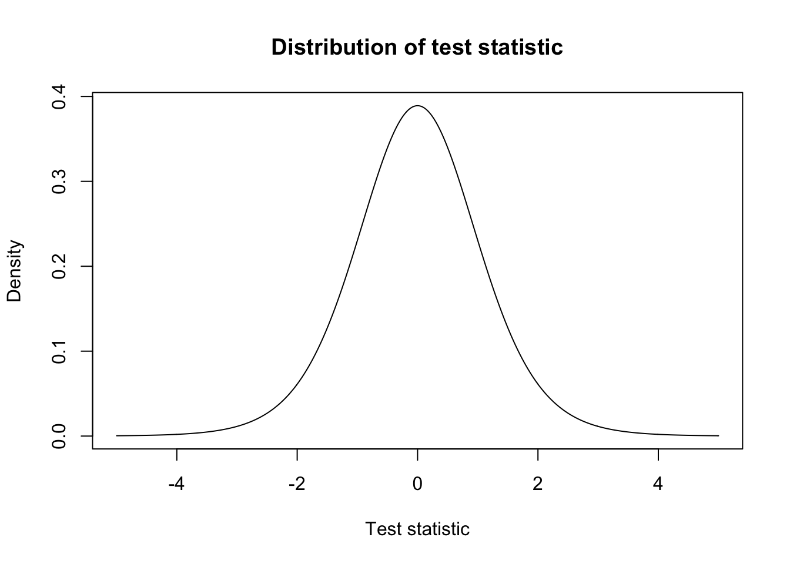
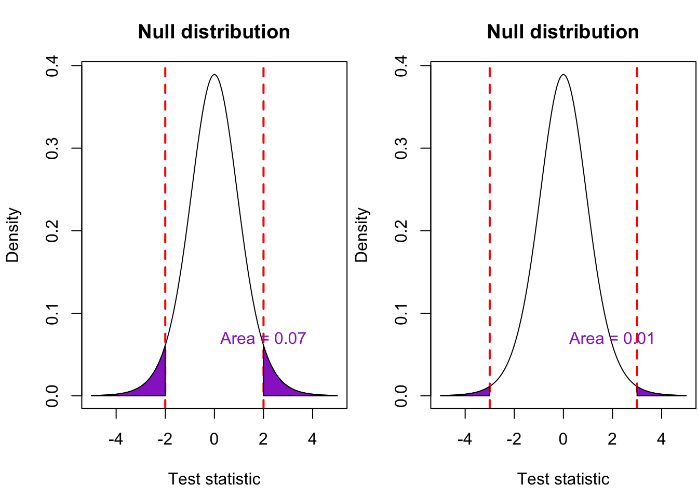
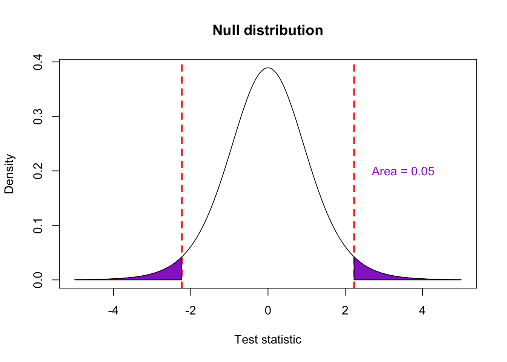
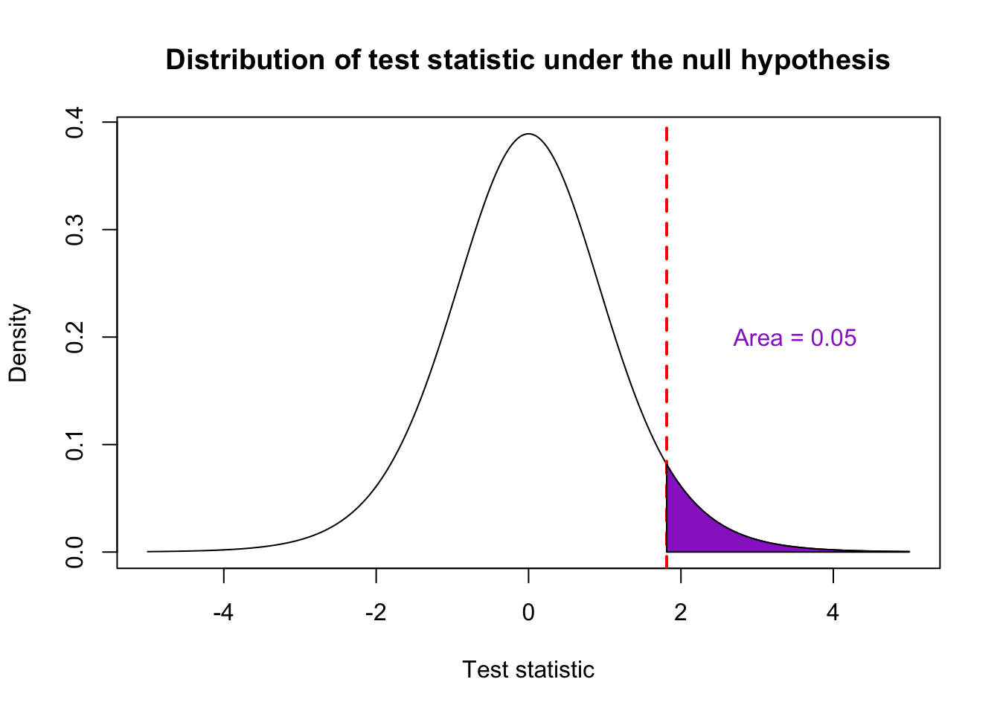
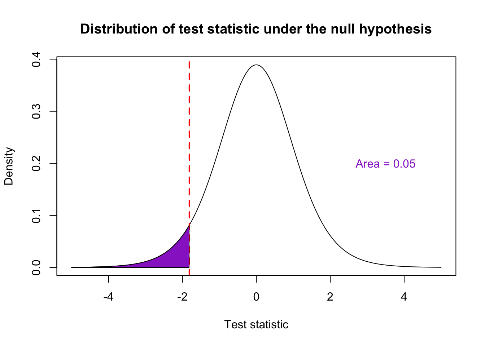
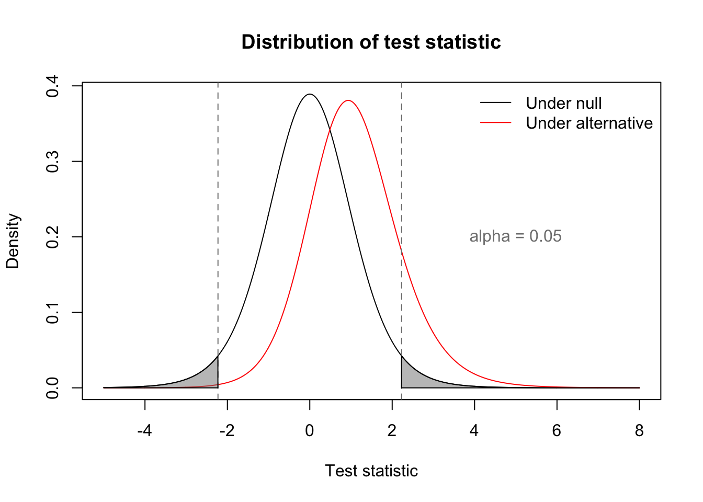
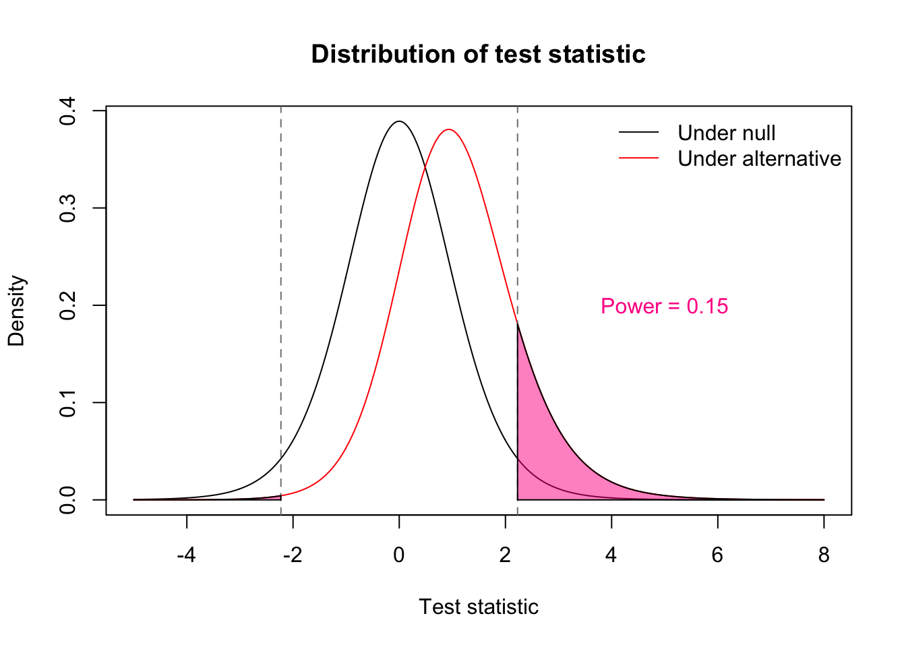

Chapter 1 Hypothesis Testing
In this chapter, we will learn about statistical hypothesis testing, one of the most ubiquitous frameworks for making statistical inferences - for learning about the world. We will start by learning the general conceptual framework underlying hypothesis tests. This will allow us to understand a large variety of statistical tests that are commonly used in scientific practice.
1.1 Aside: what is statistical inference?
I have said that hypothesis testing is a framework for making statistical inferences. What exactly is statistical inference? Statistical inference refers to the process of using data to make conclusions about the world. It deals with estimating true underlying quantities and expressing our uncertainty about those estimates. For example, we may assume that there is some true prevalence of malaria in a particular population which is unknown to us because we cannot collect malaria outcome data on everyone in the population. Instead, we may collect data on malaria outcomes within a certain research center. Statistical inference deals with using that collected data to estimate the true prevalence of malaria and to quantify our uncertainty about that estimate, typically with a range. This range is most often a confidence interval, a concept we will review in this chapter.
Hypothesis testing, we will see, is useful for comparing groups and is most often used to identify where there are differences between groups. This is a form of statistical inference because we are still using data to learn a truth about the world - the truth being whether or not these groups of interest are different. Differences are of fundamental interest in public health and in science because we care about comparisons: comparisons of different demographic groups, of policies, of old and new treatments.
1.2 Conceptual framework
A statistical test aims to answer the question: is there a difference? This question can be made more specific in different situations:
- Is there a difference in the levels of a trait between groups? e.g. CD4 levels in different HIV risk groups.
- Is there a difference in the proportion of a trait between groups? e.g. Birth defects in the children of Zika-exposed and unexposed mothers.
- Is there a difference between the average level of a trait in population X and a meaningful cutoff value? e.g. Rate of operating room mortalities in a certain hospital as compared to the national average.
All of the above questions are common in public health practice and can be examined in the hypothesis testing framework. Let’s develop these ideas using the example of adverse pregnancy outcomes in the children of Zika-exposed and unexposed mothers. In this case, the true underlying quantities of interest are (1) the probability of adverse pregnancy outcomes in Zika-exposed mothers \(p_E\) and (2) the probability of adverse pregnancy outcomes in Zika-unexposed mothers \(p_U\). \(p_E\) and \(p_U\) are also referred to as parameters.
The first component of a hypothesis test is the null hypothesis, denoted \(H_0\). This is a statement about the true parameters that describes the situation where nothing interesting is happening. It is interesting if there is a difference in the rate of birth defects between Zika-exposed and Zika-unexposed mothers. What would be uninteresting? If there were no difference in the rate of birth defects between the two groups. In other words, it would be uninteresting if the true probabilities of birth defects are the same. We can write this mathematically as:
\[ H_0: p_E - p_U = 0 \]
Hypothesis testing is akin to proof by contradiction. In a proof by contradiction, we assume that the opposite of what we wish to prove is true. Under this assumption, we determine what must logically follow. If we end up with a statement that is false, then our original assumption must have been wrong. For example, let’s say I want to prove the statement “Not all umbrellas are green.” In a proof by contradiction, I would assume the opposite: “All umbrellas are green.” What logically follows is that every umbrella I see must be green. I’m likely to stumble upon a counterexample very quickly, which proves my original assertion.
Hypothesis testing works similarly. We set up an assumption, the null hypothesis. Under this assumption, we use the tools of probability to determine how likely our data is. If our data is unlikely under this assumption, then perhaps our assumption was wrong to begin with. The key idea is that we set up our assumption to be a description of the world with nothing interesting going on. If this assumption might be wrong, then perhaps there is something interesting going on. This uncertainty is what differentiates hypothesis testing from the proof by contradiction. The moral of statistics, and perhaps science in general, is that few things can ever be proven without a doubt but that we can get close with accumulation of evidence.
The table below summarizes the comparison between proof by contradiction and hypothesis testing.
| Step | Proof by contradiction | Hypothesis testing |
|---|---|---|
| State what you want to show | Not all umbrellas are green. | There is a difference in the rate of birth defects between children of Zika-exposed and unexposed mothers. |
| Make an assumption that is the opposite of what you want to show | All umbrellas are green. | There is no difference in the rate of birth defects between children of Zika-exposed and unexposed mothers. |
| Collect data | Obtain umbrellas and record their colors. | Collect information on birth outcomes for Zika-exposed and unexposed mothers. |
| Evaluate discrepancies | A single counterexample of a non-green umbrella is enough to prove our original assertion. | Use a statistical test that provides a discrepancy measure (often a p-value). |
1.3 Statistical details
The previous section set up the big picture ideas of hypothesis testing. In this section, we will delve into more of the statistical details. Let’s continue with our example of determining if there is a difference in the rate of adverse pregnancy outcomes in Zika-exposed and unexposed mothers. Recall that the probability of adverse pregnancy outcomes in Zika-exposed mothers is \(p_E\) and \(p_U\) for unexposed mothers. The null hypothesis (which we aim to gather data to refute) describes the situation where nothing interesting is happening:
\[ H_0: p_E - p_U = 0 \]
This states that the probabilities of birth defects are equal in both groups. Recall from the previous section that the next step is to use collected data to evaluate if it is discrepant with this null hypothesis. Let’s look at the following data from a cohort study published in late 2016:
| Zika-positive | Zika-negative | Total | |
|---|---|---|---|
| Adverse pregnancy outcomes | 58 | 7 | 65 |
| No adverse pregnancy outcomes | 67 | 54 | 121 |
| Total | 125 | 61 | 186 |
Note that \(p_E - p_U\) in the formulation of the null hypothesis above denotes the true difference in probabilities. We can obtain an estimate of this true value by subtracting the sample proportions:
\[ \frac{58}{125} - \frac{7}{61} = 0.35 \]
This represents a resonable guess from our data of the difference in adverse outcome rates. We want to compare this estimate to 0, also called the null value. The null value gives the value of true difference in probabilities if nothing interesting were going on. Can’t we just use the difference between our estimate and the null value? This is a step in the right direction but how do we know if this difference is big? What if differences of 0.35 happen quite often just by chance? We need to take into account the uncertaintly/variability of the estimate (called the standard error) to see how much this difference exceeds what we might reasonably see by chance. The quantity that is computed in statistical tests that accounts for all of this information (the estimate, the standard error, and the null value) is called a test statistic. Often, but not always, a test statistic has the form
\[ \hbox{test statistic} = \frac{\hbox{estimate} - \hbox{null value}}{\hbox{standard error of estimate}} \]
What is common to all test statistics is that they are used to give a measure of discrepancy with the null hypothesis. When test statistics are large, we reject the null hypothesis. In this case, we would say that there is indeed a difference in rates of adverse pregnancy outcomes between the two groups of mothers. Let’s look at the formula above to see why it makes sense that larger test statistics suggest a higher level of discrepancy with the null hypothesis. We see that the test statistic is large when two things happen: (1) the estimate is far from the null value and (2) the standard error of the estimate is low. When (1) happens, our data is telling us that the quantity that we’re interested in is quite different from the null value. When (2) happens, our estimate is more reliable. So if our estimate of the truth is far from the null value and is reliable, there is some suggestion that we should reject the null hypothesis. Although not all test statistics have this form, they do all have the general use that large values correspond to decisions to reject the null hypothesis.
How large does a test statistic need to be to reject the null hypothesis? Is a threshold of 4 suitable? Statistical theory is able to help us here. It turns out that different thresholds lead to different error rates - we may incorrectly reject the null hypothesis when we should not or we may incorrectly fail to reject the null hypothesis when we should reject it. In other words, errors occur if we claim differences when there are none or fail to notice differences when they truly exist. With this setup, the following outcomes are possible:
| \(H_0\) true | \(H_A\) true | |
|---|---|---|
| Reject | False positive Type I error \(\alpha\) | True positive Power \(\beta\) |
| Fail to reject | True negative \(1-\alpha\) | False negative Type II error \(1-\beta\) |
To understand why different thresholds on the test statistic affect error rates, we need to understand how test statistics vary from dataset to dataset. The estimate of the true quantity of interest (\(p_E - p_U\)) varies from dataset to dataset, and because it is used to compute the test statistic, the test statistic also varies from dataset to dataset. In other words, the test statistic comes from a distribution which might look something like this.

Note that this distribution is centered around zero. This turns out to be a good description of what the test statistics might look like if the null hypothesis were true. Why is that? If the null hypothesis is true, the true difference in probabilities is zero. Thus we expect estimates of the true difference in probabilities to be around zero. This means that the numerator of the test statistic will tend to be around zero, and the entire test statistic will tend to be around zero. All of this is under the assumption that the null hypothesis is true. This distribution is called the null distribution and is also described as the distribution of the test statistic under the null hypothesis.
If the null hypothesis is true, any rejection of it is an error. Such an error is called a type I error, and the probability of making this type of error is used to pick thresholds for decision making in hypothesis testing. The probability of making a type I error is called the type I error rate, is denoted by \(\alpha\) and can be written in probability notation as:
\[ \alpha = P(\mathrm{reject} \mid H_0) \]
For historical reasons, this rate is typically set to be 0.05: if the null hypothesis is true, then we expect to incorrectly reject the null hypothesis 5% of the time. In other words, if there really is no difference in the probability of adverse outcomes between the two groups, then we can expect to wrongly conclude that there is a difference 5% of the time. This 5% is very commonly adopted but can vary from discipline to discipline depending on desired levels of stringency. Lower values of \(\alpha\) are more stringent because we are saying that the probability of a type I error should be lower. Statistical theory tells us how test statistic thresholds correspond to type I error probabilities. For example, with the null distribution we saw above, test statistic thresholds of 2 and 3 correspond to type I error rates of 0.073388 and 0.0133437, illustrated in the picture below.

A threshold of 2 would not work if we wanted to maintain a type I error rate of 0.05 because it is associated with a higher type I error rate of 0.073388. It is too low of a threshold because using it would give a higher rate of type I errors than we want. A threshold of 3 is too high of a threshold. While the associated error rates are lower than our 0.05 threshold, using too high of a threshold on the test statistic means that we are also less likely to reject the null when it truly is false. In this example, the threshold that corresponds to \(\alpha = 0.05\) is 2.23.
A very closely related concept is the p-value. A p-value is calculated from a particular test statistic and represents the probability of seeing a test statistic as or more extreme than the one seen if the null hypothesis were true. Let’s say that our statistical test gave us a test statistic of \(t\), then we can express the p-value as:
\[ \hbox{p-value} = P(|\hbox{test statistic}| \geq t \mid H_0) \]
Similarly to how high values of the test statistic indicate higher discrepancy with the null hypothesis, low p-values indicate higher discrepancy with the null hypothesis. Why? Remember that test statistics provide a measure of discrepancy with the null hypothesis. A low p-value tells us that, if the null were true, it would be unlikely to see a test statistic as or more extreme than the one we saw.
We have seen how test statistics and p-values give discrepancy measures with the null hypothesis. We have not focused our attention on looking directly at our estimate of the true difference in adverse event rates. Recall that our estimate of \(p_E - p_U\) was 0.35. Surely, the difference in probabilities is not exactly 0.35. It would be nice to express this estimate with some sort of “wiggle” room, with some degree of uncertainty. This can be achieved with a confidence interval.
A confidence interval can generally be written as
\[ \hbox{estimate} \pm k \times \hbox{standard error of estimate} \]
The value of \(k\) determines the coverage probability of the confidence interval. The coverage probability gives the proportion of times over many data collections that such a confidence interval contains the true parameter of interest - contains the true value for the difference in adverse event rates. A coverage probability of 0.95 would indicate: “if I were to collect many different datasets and use this procedure each time to construct a confidence interval, I would expect 95% of those intervals to contain the true value of the parameter of interest.” Because confidence interval calculations often rely on approximations, the nominal coverage probabilities are sometimes not equal to the actual coverage probabilities. For example, a nominal 95% confidence interval may actually only cover the true value, say, 90% of the time.
1.3.1 One and two-tailed tests
You will often see in scientific literature expressions such as one- and two-tailed tests. What does this mean? This refers to how p-values are calculated. Recall that a p-value is calculated from a particular test statistic and represents the probability of seeing a test statistic as or more extreme than the one seen if the null hypothesis were true. Let’s say we had a test statistic of 3. For a two-tailed test, we consider “more extreme” to be values greater than 3 or less than -3. In other words, we consider “more extreme” as being in both the positive and negative directions. This corresponds to writing the null (\(H_0\)) and alternative (\(H_A\)) hypotheses as:
\[ H_0: p_E - p_U = 0 \] \[ H_A: p_E - p_U \neq 0 \]

For a one-tailed test, we consider “more extreme” to be in one direction only. If in the positive direction, the situation looks like this:
\[ H_0: p_E - p_U = 0 \] \[ H_A: p_E - p_U > 0 \]

If in the negative direction, the situation looks like this:
\[ H_0: p_E - p_U = 0 \] \[ H_A: p_E - p_U < 0 \]

So when would we use a two-tailed vs one-tailed test? Two-tailed tests are used when we don’t know a priori if the difference should be positive or negative. In this case, we might feel that the difference \(p_E - p_U\) should be positive because it seems that the rate of birth defects for Zika-exposed mothers would be higher. However, we don’t know for sure. One-tailed tests can be used if we know for sure that the difference is of a certain sign. People will often raise an eyebrow when one-tailed test results are reported because it is “easier” to obtain a statistically significant results. We can see from the plots above that the test statistic thresholds are lower when using one-tailed tests.
1.3.2 Statistical power
Statistical power is the probability of detecting an association given that there truly is an association. While p-values require us to know the distribution of the test statistic “under the null”, calculating power requires us to know the distribution “under the alternative”.
The gray lines indicate the test statistic thresholds (two-tailed) for rejection for a type I error rate \(\alpha = 0.05\). The gray area is equal to to \(\alpha\).

Because the thresholds (gray lines) indicate when we reject the null, we can look at the pink area underneath the alternative distribution (red curve) to calculate power.

There are three main determinants of statistical power:
- Type I error rate (\(\alpha\)): Being more stringent (lower) with this rate is nice for controlling false positives, but it also decreases statistical power (imagine the gray lines moving outward).
- Effect size: This measures the distance between the null and alternative distributions (how far apart the black and red curves are). The further the alternative distribution is from the null distribution, the higher the power.
- Sample size: Sample size determines the precision of our estimates. (Recall that sample size always comes up in formulas for standard errors.) Estimate precision is reflected in the width of the distributions. The narrower the distributions (the more precise our estimates and the higher our sample size), the higher the power.
1.4 Common statistical tests
1.4.1 Tests for comparing continuous data
The most common statistical tests used to compare continuous values in two groups are t-tests and Wilcoxon rank sum tests. With these tests, we want to know if one group has higher values than another group.
In t-tests, we are essentially comparing the means of two groups and accounting for the variability of the observations. The test statistic in a t-test can be writen as
\[ \frac{\hbox{difference in means}}{\hbox{SE(difference in means)}} \]
The above is the situation for what is called an unpaired t-test. It is so called because the observations in the two groups aren’t linked in any way. In contrast, in a paired t-test the two “groups” are linked. This is most often seen in pre-post designs when each individual has both a pre-intervention and post-intervention measurement. In this case, we are interested in if the pre/post differences (also called change scores) are equal to 0. Here the test statistic can be written as:
\[ \frac{\hbox{mean of the change scores}}{\hbox{SE(change scores)}} \]
T-tests rely on the assumption that the observations come from a normal distribution or that the sample size is large enough for an approximation (this has to do with something called the central limit theorem) to kick in. An often used rule of thumb is 20 observations per group. When these assumptions are not met, the prescribed type I error rate \(\alpha\), typically set to 0.05, may not hold. That is, the actual type I error rate if you use the t-test with unmet assumptions might not actually be 0.05. When this is the case researchers use nonparametric tests called rank tests. Nonparametric tests do not make assumptions about the distribution of the data. The nonparametric equivalent of an unpaired t-test is called the Wilcoxon rank sum test. It is conceptually similar to a t-test where we replace the actual values with their ranks. Say for example that we have the following data:
Group 1: 10 20 30
Group 2: 15 35 40
A t-test would operate on the actual values above. The rank sum test uses the ranks of the observations in the full data (combined over the two groups):
Group 1: 1 3 4
Group 2: 2 5 6
If one group has lower values than another group, then its ranks will be lower than the other groups. The nonparametric equivalent of a paired t-test is called the signed rank test and works similarly - it compares the ranks of change scores that are negative and the ranks of change scores that are positive.
1.4.2 Tests for comparing categorical data
Studies frequently wish to compare variables that are categorical. This is commonly seen in case-control studies where we wish to see if there is an association between case status (a binary variable) and exposure status (a binary variable). With categorical data tests, we are interested in assessing if two categorical variables (each variable having two or more categories) are independent. Using our Zika example, if birth defect status is independent of Zika exposure status, then there is no link between Zika and birth defects. For categorical data we can set up our data using a contingency table that contains the counts that appear in the category combinations. For example, the Zika example results in a 2-by-2 contingency table:
| Zika-positive | Zika-negative | |
|---|---|---|
| Adverse pregnancy outcomes | 58 | 7 |
| No adverse pregnancy outcomes | 67 | 54 |
As with continous data, there are parametric tests and nonparametric tests. The chi-squared test is a parametric test for categorical data. It assumes a certain distribution of the test statistic (the chi-squared distribution) that holds up as long as there are high enough counts in each cell of the contingency table. An often used rule of thumb is a count of at least 5 per cell. How does the chi-squared test work? It is helpful to look at two quite different contingency tables:
| Disease | No disease | |
|---|---|---|
| Exposed | 20 | 20 |
| Unexposed | 20 | 20 |
| Disease | No disease | |
|---|---|---|
| Exposed | 33 | 7 |
| Unexposed | 9 | 31 |
In the first table, the counts are evenly distributed between the cells, so there is no sign of an association between exposure and disease. In particular, half of the study population is exposed and half are diseased. So if there is no association, we would expect \(0.5 \times 0.5 = 0.25\) of the population to be both exposed and with disease. This is what the first table shows. If there were some association, we would expect either more or less than 25% of the population to be both exposed and with disease. We expect more than 25% if there is some positive association and les sthan 25% if there is some negative association. This is what we see in the second table. It is still the case that half of the study population is exposed and half are diseased, but now more than 25% are both exposed and with disease. This suggests some interaction, some association between exposure and disease. This comparison of observed counts to the counts we would expect with no association is how the chi-squared test works.
A nonparametric version of the chi-squared test is called Fisher’s exact test. It is similar in spirit to the chi-squared test but does not rely on assuming a distribution for the test statistic. It essentially counts how many tables are more extreme than the actual contingency table. (For example, the second table is “more extreme” than the first.)
1.5 Multiple testing
It is often the case that studies perform many hypothesis tests. This may be because they are looking at many outcomes or covariates. Let’s say for example that a team wishes to perform 100 comparisons for their study, all at a type I error rate of 0.05. Say also that they happen to be studing something fruitless - none of their comparisons have a real difference (i.e. the null hypothesis is true for all of them). Just by chance, we expect them to see 5 (\(100 \times 0.05\)) comparisons that show a statistically significant result! This is the problem of multiple testing and portrayed well by this xkcd comic.
When scientists perform several hypothesis tests, they can make adjustments to their p-value thresholds for rejecting the null hypothesis. For example, the Boneferroni correction divides the typical type I error rate of 0.05 by the number of tests. In this way, the type I error rate of 0.05 is now expected over all of the tests instead of just a single test.